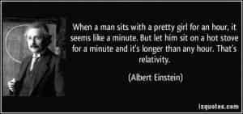
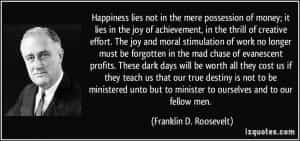
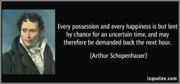
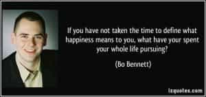

< < < Back
The Relativity Of Happiness – Return Of Kings
Everything is relative, including relativity. ― Chris Matakas, #Human: Learning To Live In Modern Times
In 1905, Albert Einstein in his theory of special relativity determined that the laws of physics are the same for all non-accelerating observers, and he showed that the speed of light within a vacuum is the same no matter the speed at which an observer travels.
Similarly, the nature of human happiness (or the definition of it) is relative (as well as fleeting), as we are all unique individuals. One man’s medicine can be another man’s poison , even though on surface it may appear as beneficial for all. At the same time, no one would know your internal happiness, for they could only see your external mirth – even if you’d be unhappy within.

More importantly, even though we might share common interests and desires which in turn dictate as to what would make us happy, these things are also time-dependent. Additionally, Harry Browne in his best seller How I Found Freedom In An Unfree World explains well about the psychological nature of happiness as such:
Happiness isn’t a new car, fame, a good marriage, wealth, or a warm blanket.Those are things. Happiness is what you feel inside of you as a result of the things that happen to you.
But the more you observe life and more importantly try to understand the nature of happiness closely, the equation of happiness affecting all reveals itself roughly as:
Happiness = balance x achievement time
where the factors of balance and achievement are different for every individual, which will further be explored below.
How balance determines happiness
Happiness can’t be experienced without unhappiness, well-being isn’t truly valued without discomfort, and pleasure doesn’t exist without frustration. Nature itself reveals balance. Similarly, a balanced life is the state where an individual experiences happiness from the things he achieves, relative to his time dependent needs. Thus, “balance” is a primary influencing factor in human happiness. The meaning of this “balance” varies individually.
A man, who lacks sex and wealth in his life would feel their absence in his life at some point or the other – even if he might later psychologically train himself to adapt to that imbalance. On the other hand, a man saturated with earthly or sensual pleasures but no other activities to balance his life might eventually get jaded of these same pleasures which provided him happiness earlier. Familiarity breeds contempt, and so do may things or people over a period of time.
The influence of balance on happiness is seen through many examples in human history itself. People who lived sensual lives suddenly gave it all up to embrace a life of sobriety and spirituality to gain happiness, whereas others who’d had religious upbringing earlier descended into the depths of sensuality for certain periods much later in their lives.
How achievement determines happiness

Continuing from above, achievement (or receiving the things which we want and need) is a crucial factor determining happiness. As long as we don’t achieve what we think would bring us happiness, we would still be trying to achieve those things to achieve “balance” (whether they might be power, money, sex, wealth, etc).
How time determines happiness

Change is one of the two certainties in life – and everything is in a state of constant flux due to the influence of time. Time influences everything in our lives – our interaction with others and our circumstances (past, present and future), our thinking and desires, and more importantly our happiness, which I mentioned earlier here:
Happiness can be described as the feeling of contentment we derive from successfully achieving or doing the things we want—at the right time, that is. But the right thing done or gotten at the wrong time often becomes the wrong thing.
The foodie will find no happiness with food at a time when he desperately wants to crap. The lover of women will find no happiness with women at a time when he is besieged with other problems. The worshipper of wealth will find no happiness in wealth at a time when he cannot spend that very wealth to obtain what he wants.Thus, time is the (often cruel) master of our happiness, working secretly in the background. It can delay our personal successes, while prolonging periods of personal failure beyond our control and in spite of our best efforts.
Since time dictates the state of balance and achievement in our lives, it thus determines the relativity of our happiness directly. What you wanted in the past is not what you’ll want tomorrow. Thus it becomes extremely important to project the value of a commodity or a person in the future in order to gauge their real potential in creating long term happiness for us, as everything in life is subject to the flux induced by time.
Conclusion

Since happiness is relative, it becomes extremely important to define it. Every man’s definition of happiness is unique—but what must be realized is that it shouldn’t come at the expense of a man’s identity and freedom, which unfortunately is increasingly common in today’s world.
Our societies puts emphasis on wealth, sex, or popularity as the most important factors which would constitute our lasting happiness, but what is forgotten is that though these things might contribute to our “happiness” at a particular phase in our lives, it won’t for everyone and forever – due to the relativity of happiness.
As our personalities change over the years with time, so do our tastes and the “things” which would make us happy. The wise man is the one who understands and realizes the illusionary as well as relative nature of happiness, and learns emotional detachment to superficial pleasures—even while enjoying them.
Read Next: The Argument Against Chasing Happiness


{kind=link}
{kind=link}
{kind=link}
{kind=link}
{kind=link}